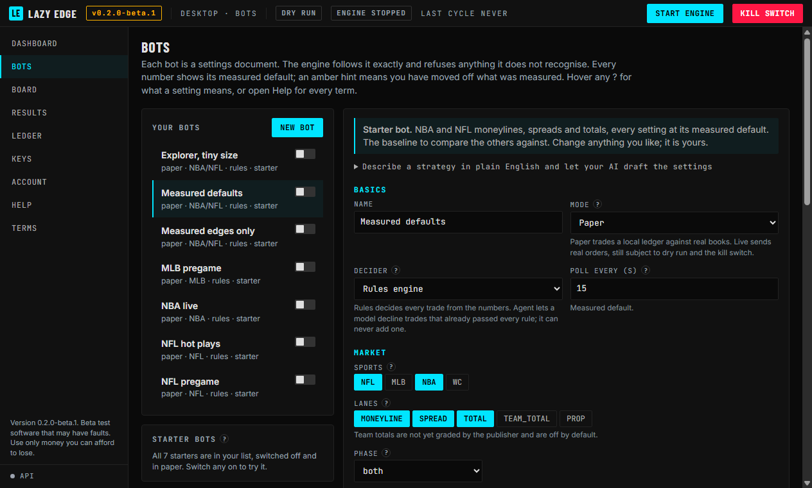
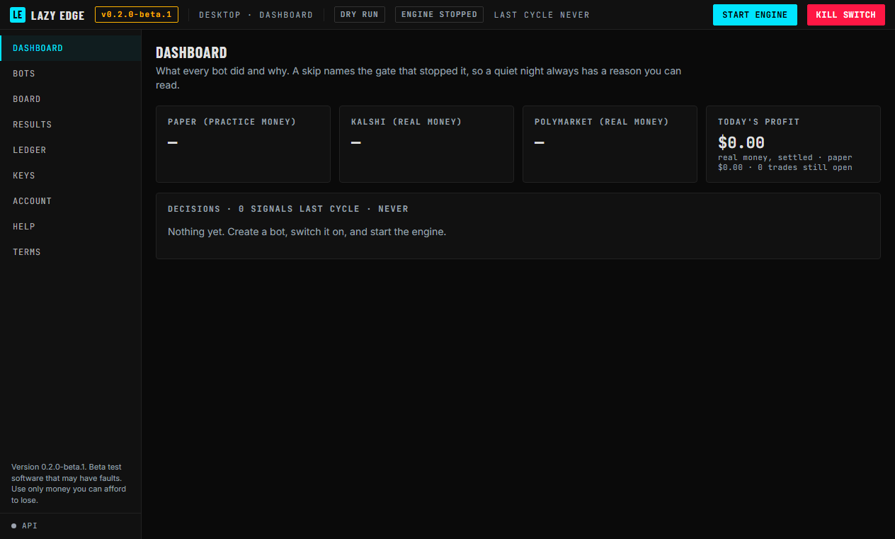
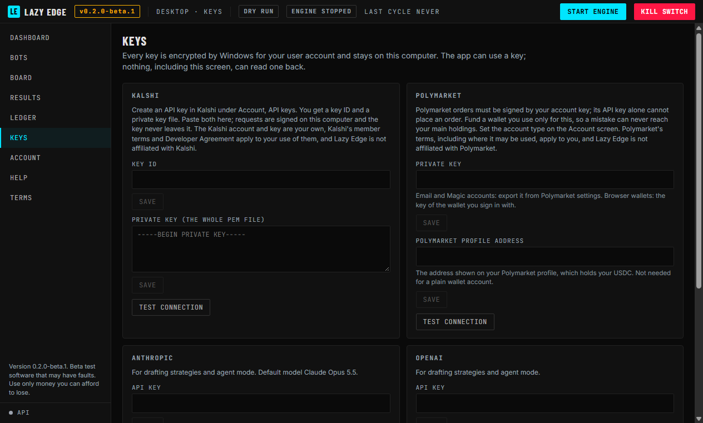
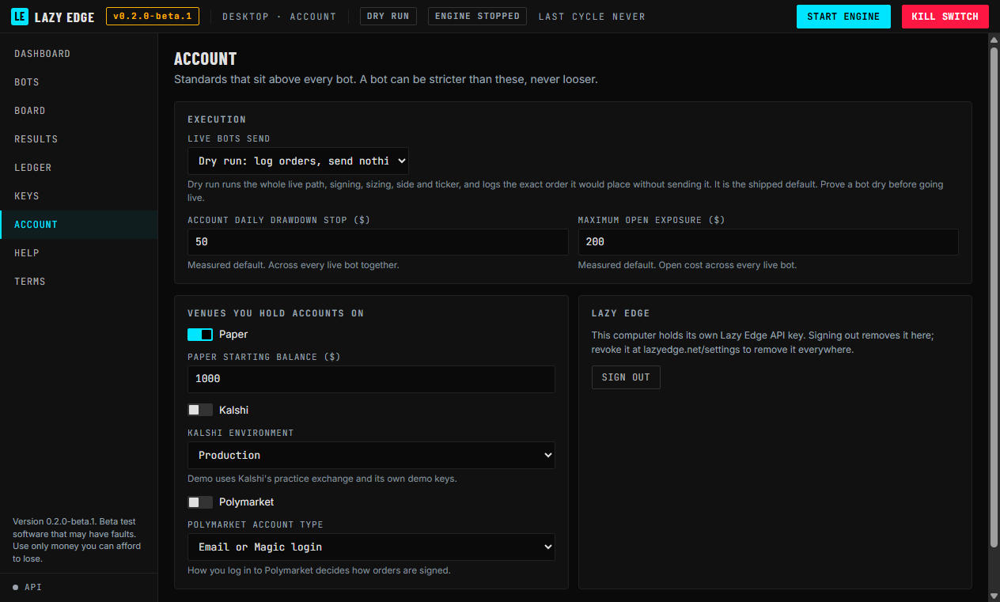

Desktop · Version 0.2.0-beta.1
The app is installed. These five pages take you from the first launch to a bot trading practice money in about ten minutes, and show you every lock that stands between a bot and real money.

01 · Orientation
Everything important lives in the top bar, so you can always see whether the engine is running and whether real money is in play, whichever screen you are on.

1 2 3 4 5 6 7 8The Dashboard on first launch, before any bot has run
02 · Ten minutes
Paper trades practice money against the real order book, so you see exactly what a bot would do without risking a cent. Start here, whatever you plan to do later.
On first launch, read the terms, tick each acknowledgement and choose I agree. Then sign in to your Lazy Edge account with an email code or your wallet. The app creates its own Lazy Edge key for this computer, so there is nothing to copy or paste. Your plan needs API access, which comes with a paid plan or 5 or more Lazy Lions in a linked wallet.
Open Bots. Seven starter bots are already in your list, all switched off and all in Paper. Flip the switch beside one to turn it on. Measured defaults is the best first choice, because every setting sits at its measured value and it is the baseline the others are compared against.
Press Start engine in the top bar. The badge changes to Engine running and the health light turns green after the first clean cycle. Bots only trade while the app is open and the engine is running.
The Dashboard lists every decision as it happens. The Board shows every play Lazy Edge published, game by game, and what each of your bots would do with it, including bots that are switched off. A quiet night is normal: every skip names the check that stopped it.
03 · Choose and judge
Each bot is a settings document that the engine follows exactly. Run a few side by side in Paper and let Results tell you which one earns its place.
| Bot | Sports | What it does |
|---|---|---|
| Measured defaults | NBA · NFL | Moneylines, spreads and totals with every setting at its measured default. The baseline to compare the others against. |
| Measured edges only | NBA · NFL | Only edges with a graded track record, a higher edge bar and half the trade size. Fewer trades, each backed by a measured record. |
| NBA live | NBA | In game moneylines and spreads. Refuses any price older than a minute and stops entering two minutes before the end. |
| NFL pregame | NFL | Moneylines, spreads and totals before kickoff, checked once a minute. No in game trading. |
| NFL hot plays | NFL | In game plays, only when a game event fires the play. Quiet most of a game by design. |
| MLB pregame | MLB | Moneylines and totals before first pitch, checked once a minute. |
| Explorer, tiny size | NBA · NFL | Every tradeable label at a lower edge bar and $2 a trade at most, so Results can show which labels and lanes are worth keeping. |
Change any setting you like; a starter is yours once it is in your list. Every field shows its measured default, and an amber hint means you have moved off it. Delete a starter and you can add it back from the Starter bots panel.
Results shows what won and what lost from your own settled trades, broken down by every setting. A pattern is only called winning or losing once it is unlikely to be luck, and results are judged by games, so a few lucky nights are not mistaken for a pattern. Use Proven only to keep just the fills backed by the real market record.
Ledger keeps every ticket. Click a row for its full audit trail. Help explains every term, and any ? in the app does the same on hover.
Found settings that work? Save the bot, press Share and copy the code. It is one line of text that holds settings only, never trades, balances or keys.
To use someone else's, open Import a bot from a share code on the Bots screen, paste it, choose Read code to see every change from the defaults, then add it. An imported bot always arrives switched off and in Paper.
04 · Only when you are ready
Prove a bot in Paper first, then in dry run, and only then let it send real orders. Each step below is a separate, deliberate switch.

Keys · encrypted by Windows, never shown again

Account · dry run, limits and venues
Your settings, bots, ledger and keys live in %APPDATA%\Lazy Edge on this computer and are never uploaded. When a new version is out, the app tells you at startup; download it from the Releases page and your bots carry over.
Report a problem as an issue on github.com/Web3kaneco/lazy-edge-app with the version from the top bar. Never paste a key into an issue.
Lazy Edge Desktop is unfinished and still being tested. It may contain faults that place, miss, size or price orders wrongly. Use it only with money you can afford to lose entirely; Lazy Edge is not responsible for funds lost using it.
Lazy Edge publishes data, not financial advice, and is not affiliated with Kalshi, Polymarket or any other venue. Their terms apply to your accounts.